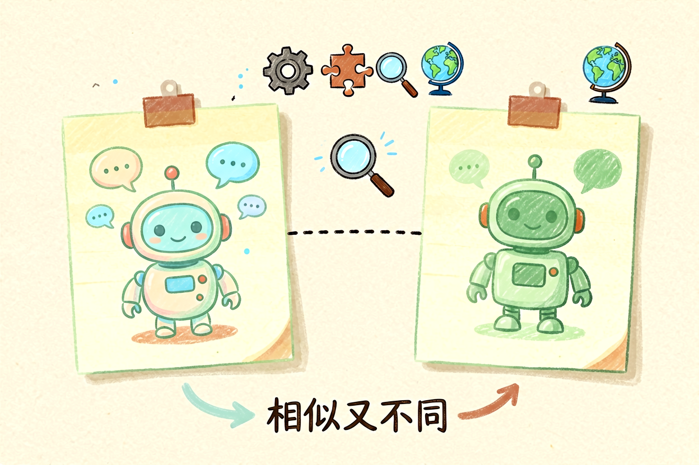
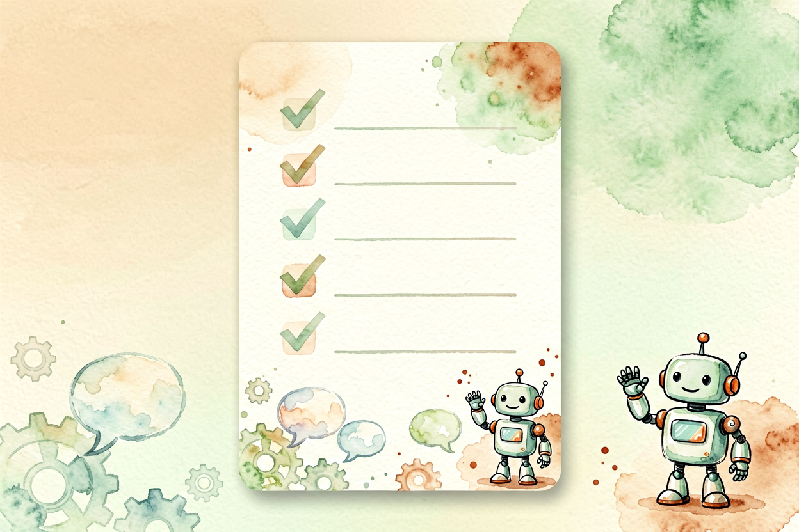

Gemini新手入门指南：从零掌握Google AI助手全功能
第一次接触这个AI助手不知道它能做什么？本文带你掌握多模态理解与生态集成的核心技巧。
Gemini新手入门是本文的核心主题，下面详细介绍如何使用。
Gemini新手入门：了解Google AI助手

Gemini是Google推出的多模态AI模型，能够理解文本、图片、代码等多种输入形式。它的特点是长上下文能力、强大的推理能力、与Google生态的深度集成。新手使用Gemini前，先理解它与ChatGPT的区别。
ChatGPT是OpenAI的产品，Gemini是Google的产品。两者核心能力相似，但在生态集成、多模态支持、中文理解方面各有优势。Gemini的优势在于与Google Workspace的集成，可以访问Gmail、Docs、Sheets等应用的数据。
Gemini新手入门：访问方式与账号

Gemini提供网页版和移动端两种使用方式。网页版访问gemini.google.com，移动端下载Gemini App。注册Google账号后即可使用，免费额度足够个人日常需求。高级功能需要订阅Gemini Advanced。
进入界面后，左侧是历史对话，右侧是聊天区域。输入框支持文本和图片输入，可以多模态提问。新手建议先从简单问题开始，熟悉界面和功能后再尝试复杂任务。
Gemini新手入门：多模态能力

Gemini新手入门的重点是多模态能力。它不仅能处理文字，还能理解图片内容、生成代码、分析文档。图片理解方面，可以描述图片内容、回答图片相关问题、从图片中提取文字。
代码生成方面，Gemini支持多种编程语言，可以生成完整代码片段、解释代码逻辑、修复代码错误。参考提示词写作方法，使用结构化提示词获得更好的代码生成效果。
Gemini代码生成示例：
用户：用Python写一个斐波那契数列函数
Gemini：
def fibonacci(n):
if n <= 1:
return n
return fibonacci(n-1) + fibonacci(n-2)Gemini新手入门：Google生态集成

Gemini的优势在于与Google生态的深度集成。它可以访问Gmail、Docs、Sheets、Slides等应用，帮助用户处理邮件、编辑文档、分析数据、制作演示。这种集成能力是其他AI助手不具备的。
使用集成功能前，需要授权Gemini访问相应应用。授权后，可以在对话中说「帮我总结这封邮件」或「把这份文档翻译成英文」，Gemini会直接读取并处理。参考ChatGPT新手入门中的办公场景，理解如何高效使用集成功能。
Gemini新手入门：注意事项

Gemini新手入门过程中，要注意几个问题。不要依赖Gemini的事实性回答，关键信息必须验证。不要授权过多应用权限，保持最小必要原则。不要重复问相同问题，会消耗额度。
使用Gemini时，记住它是辅助工具，不是替代你思考。输出的内容要自己把关，特别是涉及决策的内容。别让Gemini替代你的判断，它只是工具，关键决策仍要自己判断。不要盲目信任AI生成的每一个字。
Gemini新手入门：实际使用案例

Gemini在实际使用中有许多实用场景。比如分析图片，你可以上传一张产品照片，让Gemini描述图片内容、提取文字信息，甚至分析图片中的设计风格。再比如写代码，让Gemini帮你生成Python脚本、解释代码逻辑、修复代码错误，对程序员来说非常实用。还有一个常见场景是文档总结，把长篇文章或报告粘贴给Gemini，让它生成简洁的摘要，节省阅读时间。以上是关于Gemini新手入门的完整指南。 别让AI工具替代你的思考，关键决策仍要自己把关。不要盲目信任AI生成的内容。

本文信息核对于 2026-09-07。AI 产品的价格、免费额度与功能变动频繁，实际以各工具官网当前说明为准。